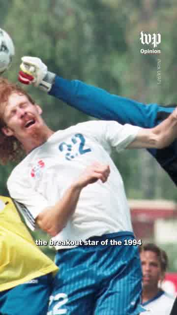

02
Next project
A wider piece can live here — documentary, profile, explainer, whatever deserves the space.
video editor
I edit stories for screens big and small — often fast, sometimes strange, always with care.
see some work ↓A mix of vertical, editorial and longer-form pieces.
The Washington Post
A vertical opinion piece built from presenter footage, archival moments and a lot of tiny pacing decisions.
watch the short ↗
playA wider piece can live here — documentary, profile, explainer, whatever deserves the space.
Short-form work gets a real 9:16 home instead of being cropped into a landscape box.
A second vertical slot keeps the page rhythmic without making it feel like a social feed.
Room for something slower, more cinematic, or simply different.
about
I’m Owen, a video editor interested in rhythm, clarity, comedy, texture and the tiny choices that make something feel right.
I work across editorial, documentary and short-form video. The tools change; the part I care about is finding the shape of the story.
say hello